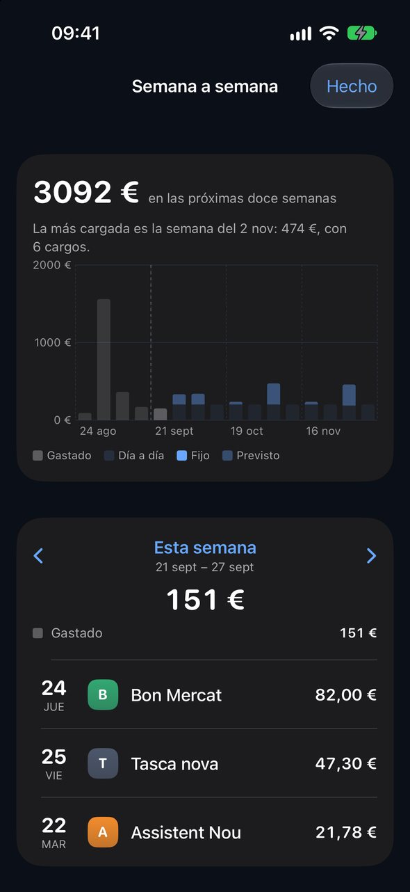
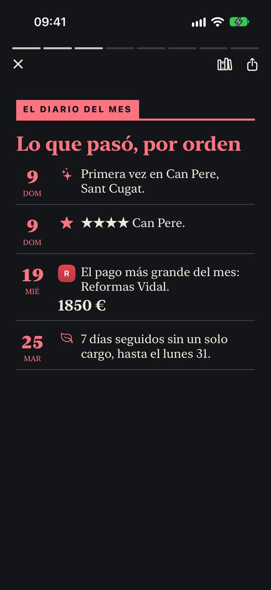

Todo lo que ve, una pantalla cada vez
¿Algo raro?
Un Bizum a alguien nuevo y muy por encima de lo habitual, una transferencia a una cuenta nunca vista, un cargo en el extranjero sin viaje, una tarjeta que están probando, un cobro doble. Tiquet te pregunta si lo reconoces y, si no, te dice qué hacer ya. Se calcula en tu iPhone y no contacta con nadie.

¿Qué tenemos contratado?
Cada póliza, suscripción y recibo como una ficha: número, precio, periodo, renovación, último día para dar de baja, el teléfono al que llamar y el PDF adjunto.

Los próximos doce meses, en una pantalla
Una barra por mes, sólida para las cuotas fijas y más clara para los recibos que dependen del consumo, verde para lo que este mes ya ha cobrado. Debajo, cada cargo en su día: el importe, y en qué se apoya cuando es una previsión.

Dieciséis barras, nada que ampliar
Cuatro semanas atrás y doce adelante. Lo gastado, y luego lo que viene: tu ritmo del día a día, los cargos fijos y los recibos que van por consumo. La semana más cargada se nombra arriba, porque es la que duele.

El periódico de tu casa
El día 3 sale el número del mes pasado: una portada, el dinero dibujado día a día, un diario de lo que pasó, dónde comisteis y qué os encantó, el mapa, y el horóscopo de la casa: lo que trae el mes que viene, leído en tus contratos y no en las estrellas.

Escrito en el dispositivo con tus tiques, extractos y valoraciones
Compártelo en PDF, con cifras o sin ellas. Todos los números anteriores, en la hemeroteca.

Sitios donde comisteis
Vuestros habituales en una estantería, los viajes detectados solos, las localidades de casa de un vistazo; y luego cada sitio con sus estrellas y notas, todas sus visitas, lo que ha costado y los platos para volver a pedir. Busca un nombre que tu banco conoce y pasa a ser un sitio.

Pregunta con tus palabras
«¿Cuánto llevo en compra este mes?» «¿Qué restaurantes nuestros tengo cerca?» «¿Dónde me encantó el Cacaolat?», y luego «¿Y en Sabadell?». Se responde en el dispositivo mientras lo escribe, con tus datos, y por voz si quieres. «¿Cuánto en…?» da la cifra exacta, y un toque muestra cada pago.